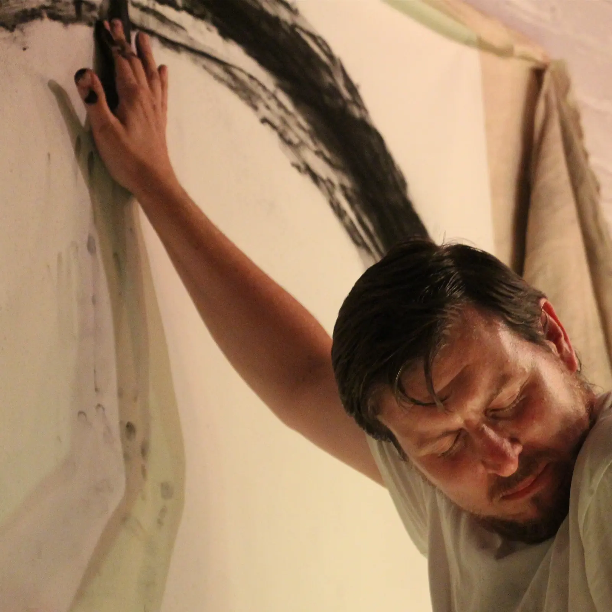

My practice begins with lived experience, with memories, the places that shape us, and the things we carry. Working across sound, moving image and performance, I explore the relationship between personal history and the world around us. Drawing on experiences of economic hardship, trauma and recovery, my work brings overlooked working-poor and working-class experiences into dialogue with wider cultural narratives. Through familiar materials, imagery and visual languages, I examine how identity, memory and belonging are shaped by the environments we inhabit. My art reveals the beauty of the overlooked, the discarded and the unspoken.
